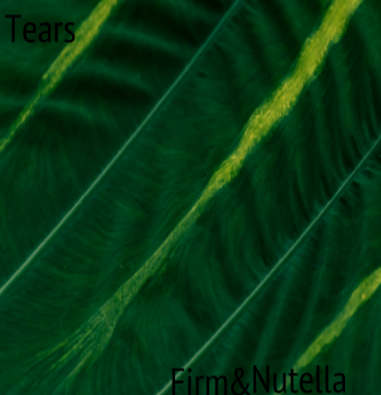

Challenge: Design a Band
Challenge Information
Write in your own information about the challenge. Ideas to include:
- ---What is design thinking? Why are we studying it?
- ---What are the steps of the DEEP design thinking process?
- ---Summarize the steps that we did in class to make the album cover.
Album Cover
Band Biography
The members are firm and nutella. They have known each other since they were children since the beginnings of 1900’s. In their culture music was a big part since they grew up with it. One day they were making beats with their hands and feet rhythms that were very catchy. They love pop and they decided that they should make there own band and write the notes down,the formed their band in 1935 it was at 6:00 p.m sunset hour to be exact. In their garage they recorded their beats and then added lyrics to it to make it music.At school the next day they showed their frends what they had made and all of them liked it it was something new. At school they were going to have a talent show day, they decided to join. The day they performed a student from the school recorded them and uploaded it to myspace. The video went viral and they were contacted through email. They then got a contract to get signed to productions and be an actual band.They formed lots of music and eventually formed an album.The album went platinum worldwide and they won grammy’s. They were from San Francisco and played in La and had world tours.The main instument that they use to play is the quitar and then add lyrics to it,they have been very successful in life and forever will be remembered.
To hear track one of the new album before they had add the lyrics, check out the following link: Guitar Cover